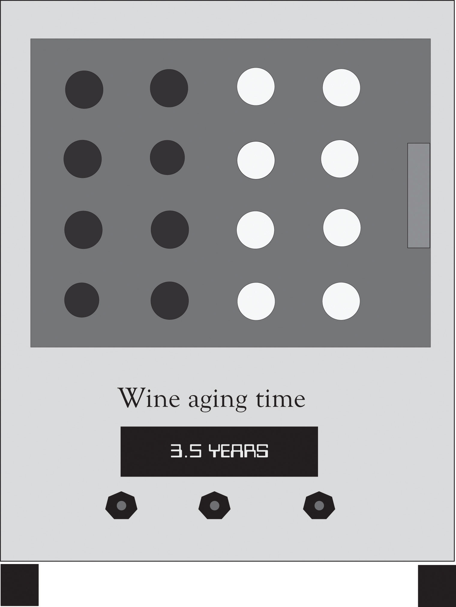

It is said that music is the wine of silence. Aged wine is for those seeking silence and comfort in the chaos of everyday life. It is our mission to bring aged wine to the discriminating concern and to give everyone the opportunity to drink aged wine at a reasonable price. A good Merlot can take up to 15 years to age, a Pinot Noir or a Burgundy can take up to 5 years to age, and Shiraz-based wines may require 20 years. We sell the most advanced solutions for improving the aged quality of most wines without having to pay high prices or wait many years for the wine to be ready for the palate.
Our product (see prototype below of the AddVintner Star) can attract variety wine drinkers including wine connoisseurs, the wine aficionado, and expensive restaurants/clubs and wine enthusiasts and dabblers. Our product will help to reduce the time that a consumer has to wait for fine wine, it will also increase the quality of low-priced wines and it will increase the status of the owner of the product. We are strong believers in design-driven innovation and will spend several months experimenting with new ideas and concepts for creating new customer meanings for wine aging. R&D will be the key driver for developing products that are unique, contemporary, and relevant to the wine community. The competition will simply not be able to keep pace with our research-based design-driven products.
We are an idea-driven company and have assimilated a creative team of researchers and entrepreneurs to deliver products to compliment and reflect contemporary tastes. Our marketing and production plans are in place and we have a strong grasp of the critical elements in the supply chain. We are developing an organization that will not just listen to consumers but will also be proactive in developing products that will anticipate and drive demand.
Per capita wine consumption in the USA exceeds 9 liters per year.http://www.wineinstitute.org/files/PerCapitaWineConsumptionCountries.pdf Wine drinking by the Gen Xers and the Millennial’s exceeds the consumption of beer and spirits.http://www.winemarketcouncil.com/research_slideview.asp?position=9 We have an opportunity to tap into that huge market and develop products that are relevant to the life style of Gen Xers and the Millennial’s. We believe that we can generate nearly $7 million in revenue the first year. It is our goal to enter the market by January with two new products for producing fine wine before its time.
Figure 9.3 The AddVintner Star
